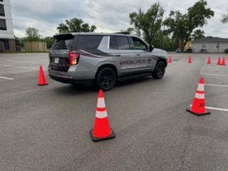
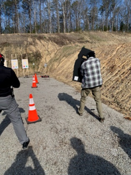
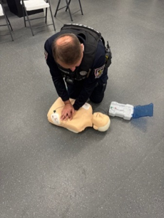
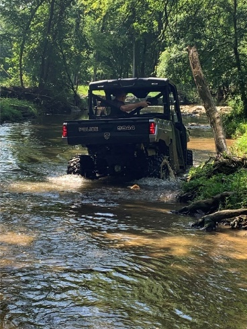

Prepared People.
Modern Tools.
Stronger Response.
Supporting the advanced training, reliable equipment and specialized capabilities that help Jeffersontown Police Department personnel serve safely, effectively and with confidence.
See What Your Support Makes Possible →Readiness Starts Before the Call.
The Foundation helps provide opportunities for advanced training, modern equipment and specialized resources that strengthen how Jeffersontown Police Department personnel prepare, respond and serve the community.
Preparation Builds Confidence.
Strong training gives personnel the opportunity to sharpen skills, strengthen decision-making and prepare for the wide range of situations they may encounter. Foundation support can help expand access to specialized instruction and professional development beyond the basics.
Tools That Strengthen Our Mission.
Investments in innovative equipment and technology can improve capability, efficiency and situational awareness across every area of service.
Training That Moves With the Mission.
Readiness is built through practice. From lifesaving response and investigative work to driver training and coordinated team operations, preparation helps personnel meet the moment when the community needs them.

Driver Training
Team Response
Lifesaving Skills
Specialized ReadinessHelping JPD Stay Ready for What’s Next.
Foundation support can help JPD secure equipment, technology and specialized resources beyond traditional public funding—strengthening capabilities and helping personnel stay ready as public safety needs evolve.
Help Equip the People Who Serve Jeffersontown.
Your support can help strengthen training, improve equipment and expand the capabilities personnel rely on to serve the community safely and effectively.
Support Training & Equipment →